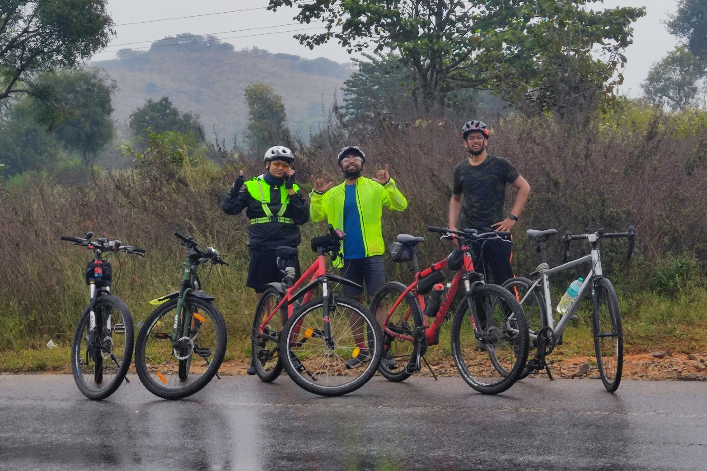

I have found my passion flowing in a plethora of activities, other than academics. However, I got stuck with the habit of picking the physically challenging ones, especially during my time as Deputy Enginerr at Bharat Electronics Limited. I got the opportunity to work in a new environment and was exposed to the industrial grade research and manufacturing methods. I was involved in the designing of a ruggedized shelter mounted on an 8x8 truck to the design of an enclosure for a critical PCB in a big system. My seniors, colleagues and juniors have equally contributed in various ways to my growth and development as an Individual. Here is the photo of our team from Bharat Electronics Limited.


Nandi Hills ride on 26th January, 2023. After riding for 50 Kms to reach the base of the Nandi Hills, the ride to the peak of the Nandi Hills,
at an altitude of 1478 meters, has marked the beginning of a journey that engages your senses, challenges your body, and rewards you with a sense of
accomplishment and a connection to nature.

My first Inter-City cycling ride began on 10th December, 2022. In the early hours of the day we started towards Mysore, the city of palaces.
The distance between the two cities is around 180 kilometers, as we have taken the routes through the villages and enjoying the
scenic countryside through strong headwinds and rain. The ride took 11 hours to complete and would turn out to be one of the toughest rides due
to the harsh weather we were conditioned to.
We embarked on a serene cycling journey to Hesarghatta Lake on 22nd May, 2022. I was accompanied by my brother and we enjoyed the lush
greens around the lake and the famous cycling track around it. We were pedaling through tranquility, surrounded by nature's beauty, a
refreshing escape from the city's hustle, connecting with the calm waterscape.


On 3rd September, 2022, we have went on a cycling ride to Manchanabele Dam. We rode around 85 kilometers on that day and the scorching
heat has turned out to be the main adversary after the steep and curvy roads. I was accompanied by my brother and all the trouble was worth it,
as we enjoyed the picturesque backdrop of hills and the reservoir.

On 6th March 2022, I went on my first cyclothon along with a few colleagues from my work place. The cyclothon was conducted by
Manipal Hospitals on the occassion of World Kidney Day and to spread awareness about it. I have also participated in the Cyclothon 2.0 conducted
in the next year to a big success.
On 13th March 2022, I participated in the 5KM marathon run, conducted by Narayana Nethralaya on the occassion of World Glaucoma Week, 2022.
I rode for 20 kilometers to participate in the run and had to start immediately after reaching there, as I went late to the venue. Thus, it became my first
unofficial Duathlon race with cycling and running.

On 17th September 2022, I set out on a trek to the peak of Skandagiri Hills. The pre-dawn trek to the summit offers
breathtaking sunrise views above the clouds, and rewarding us with a mesmerizing sight and a sense of achievement. The peak is
located at an altitude of 1450 meters and the trek distance to the summit is around 8 kilometers. The rugged trail and ancient
ruins further add to the allure of this adventure.

Wissenaire, the annual tech fest of IIT Bhubaneswar, conducts a lot of competitions in it's three day event. This was one of those many
events conducted by them, this one was conducted in the 2020 edition. This was the last big event that has happened at our institute before the
COVID-19 lockdown. My team (from left) Myself, Kaushik, AVK, Ajay, Liyanth, Anurag, Srinivas and Nischal. The event was a mock auction, similar to IPL Auction.
The winner was decided based on the players bought by each team and their score points, while maintaing the proper team balance.